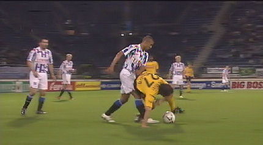
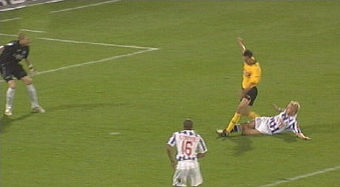
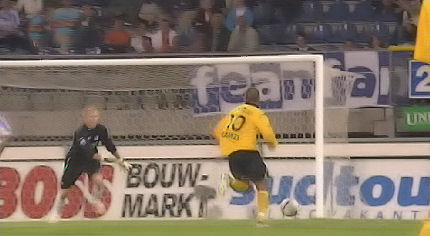
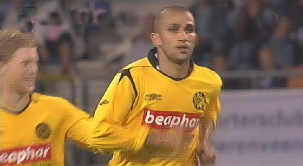
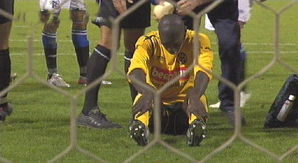
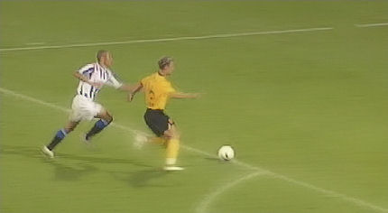
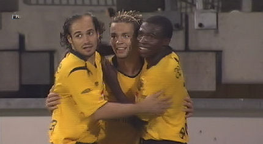
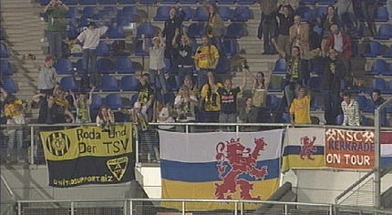

|
SC
Heerenveen - Roda JC (0-2) 21 september 2006
|

De wedstrijd begint in een langzaam tempo. Hier is Bodor in duel.

Na een minuut of twintig een aardige kans voor de Fauw.

In de 69e min. wordt Ramzi prachtig aangespeeld door de Fauw. Ramzi
schiet de bal binnen: 0-1.

Roda's topscorer, Adil Ramzi.

Zelfs Kah is niet onkwetsbaar....

Zuiverloon is niet attent, Vandamme wel: 0-2, (90').

Jamaïque ontvangt de knuffels van Bodor en invaller Sonko.

Vreugde bij de Rodasupporters die op deze doordeweekse dag de moeite
hebben genomen om deze lange trip te maken.
© Koempels Pleasure Dome
|